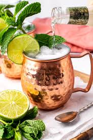

HOME
Moscow Mule Recipe

About Moscow Mule
A Moscow mul is a cocktail that is made with vodka, ginger beer, lime juice
lime, and mint.
The Moscow mule was born out of the need to clear the bar's cellar. Wes Price, the creator,
needed to clear the basement of unsold inventory, which usually consisted of vodka and ginger beer.
Ingredients
- 2 ounces of vodka
- 1/2 ounce lime juice, freshly squeezed
- 3 ounces of ginger beer, chilled
- Garnish: lime wheel
Steps
- Fill a Moscow Mule mug (or highball class) with ice.
- Add 2 ounces of vodka.
- Add 1/2 ounce of lime juice.
- Top with 3 ounces of ginger beer.
- Garnish with a lime wheel.